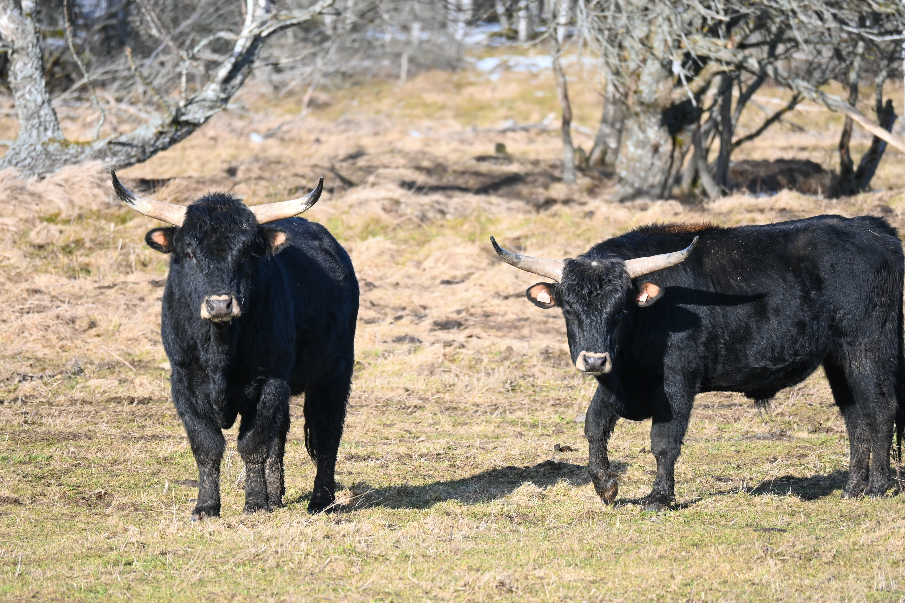

Recréer une Espèce Disparue
Spécificité :
L'Auroch est une espèce de bovidé, ancêtre des races actuelles de bovins domestiques et dont la descendance sauvage est désormais éteinte.
L'Auroch de Heck est issu d'une sélection de races bovines domestiques menée en Allemagne dans les années 20-30 par Heinz et Lutz Heck. Ce mélange visait à recréer le type originel sauvage des bovins domestiques, c’est-à-dire l'aurochs originel, Bos primigenius.